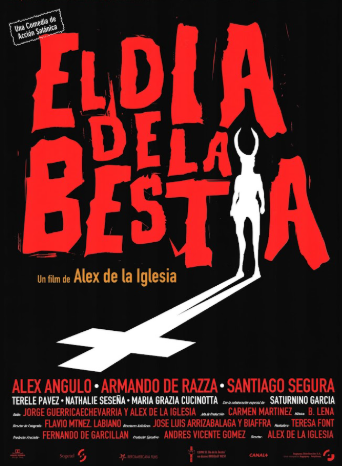
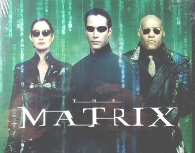
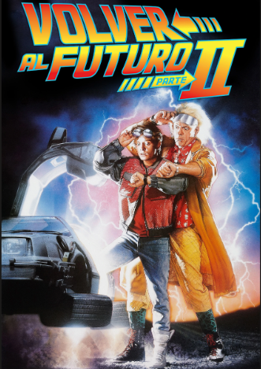
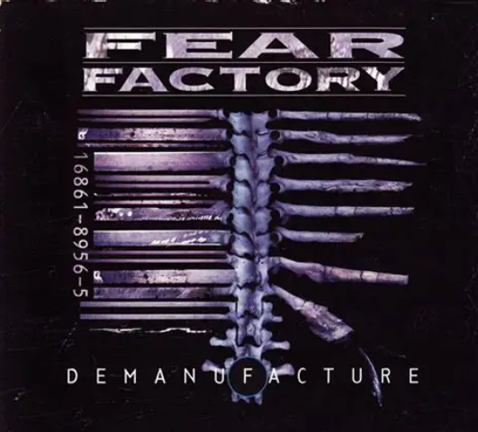
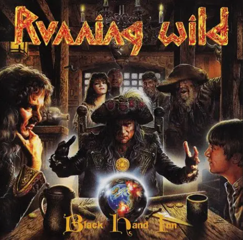
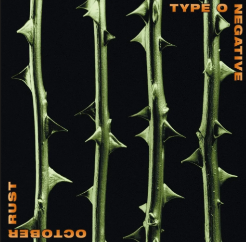

01 / HABILIDADES
02 / CINE
 El Día de la Bestia  Matrix  Volver al Futuro II
03 / MÚSICA
 Fear Factory  Running Wild  Type 0 Negative
Herramientas
de investigación
Visiones
favoritas
Frecuencias
preferidas
EXPEDIENTE DE CAMPO · N.º 03
Juan Sebastian
Paez Horvath
⌖ Argentina
DESARROLLO ／ JAVASCRIPT
ARCHIVO
ABIERTO
2026
ABIERTO
2026
La ausencia de evidencia no es evidencia de ausencia.
01
◈
Pensamiento Divergente
02
✦
Rehabilitación Física
03
⌖
Aprendizaje Metódico
04
∞
Creatividad Informática
01 / ARCHIVO
02 / ARCHIVO
03 / ARCHIVO
01 / ARCHIVO
02 / ARCHIVO
03 / ARCHIVO
04 / INTERACCIÓN JAVASCRIPT
BUCEO EN EL VACÍO
Sumergite en el vacío y observá con atención.
El vacío permanece inmóvil.
05 / TRANSMISIÓN
Contactar al investigador
Dejá un mensaje en el expediente de Rubén. La transmisión será registrada en el archivo.